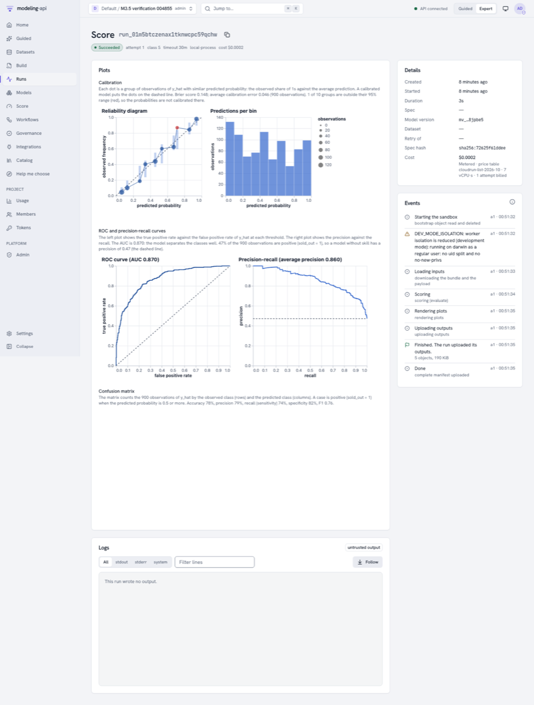
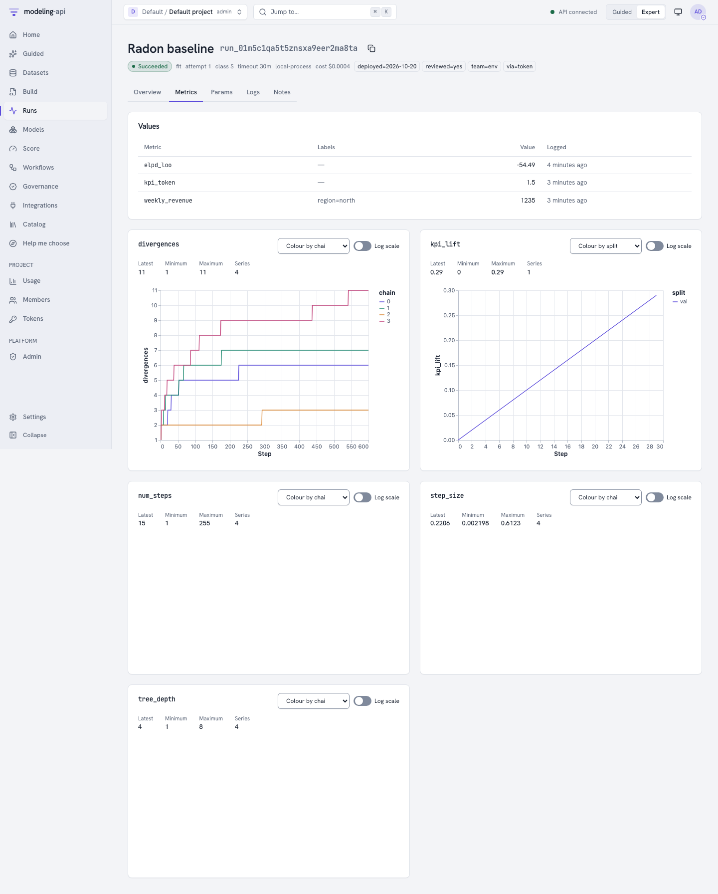
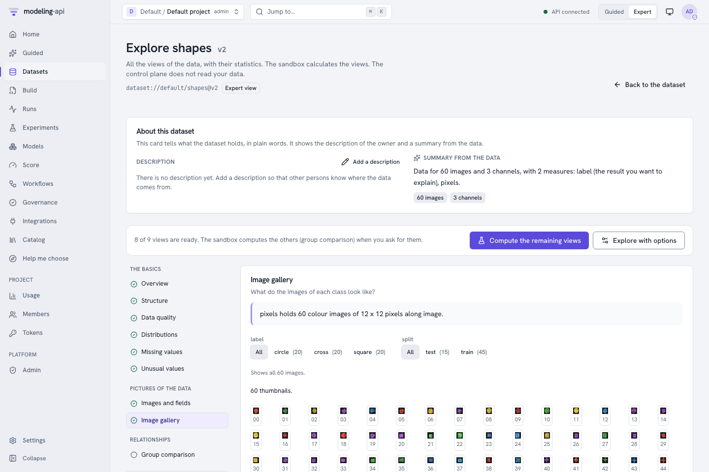
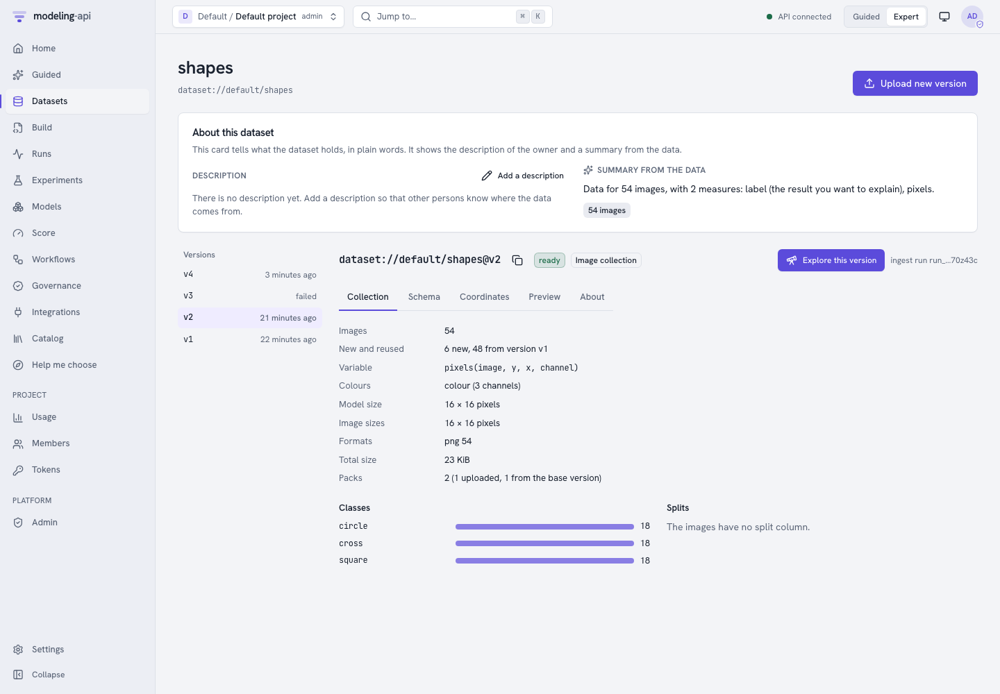

What's new in 0.10 to 0.15 v0.15¶
Six releases make the platform a place to train, track and compare models. Each run now keeps a log of its metrics, params, tags and images. You can search, compare and group runs. The marketing-mix models get two new models and the charts that a marketing team asks for. Three causal models measure the effect of a campaign, a launch or a test. You can upload images, classify them, and train neural networks, also on a GPU.
This page covers the releases v0.10.0 to v0.15.0. The page What's new in 0.9 covers the science gallery.
-
Plots that follow the data v0.10
A score run draws each output by its shape: a map for a grid, a fan for a time series. Classifiers get ROC, precision-recall and confusion plots, and the metrics
aucandmaseare now calculated. -
Run tracking v0.11
Model code, workflow nodes and you can log metrics, params, tags, notes and log lines to a run. The run page shows live curves and a lane for each chain.
-
The MMM pack v0.12
mmm.nestedandmmm.multivariate, channel effects that change over time, counts and shares as the result, and ten new plot recipes, for example ROI with mROAS. -
Causal models and BSTS v0.13
causal.impact,causal.synthetic_controlandcausal.didcompare the actual values with the values without the change.ts.bstsforecasts from level, trend, seasons and drivers. -
Run comparison and images v0.14
Filter and sort runs by their metrics, save the search as a view and compare 2 to 10 runs side by side. Runs can log images. A zip of small images becomes a dataset that you can classify.
-
Deep learning v0.15
mapi-jaxtrains networks for tables and images on JAX and Flax. Image collections hold up to 1 000 000 images. The resource classGPUgives a run one NVIDIA L4.
The catalog now has 50 models, 29 steps, 57 plot recipes, 57 workflow nodes, eleven workflow recipes and eight Guided templates.
v0.10: plots that follow the data¶
A score run now draws each output by its shape. A gridded output, for example the
intensity of sci.lgcp_grid, shows as a map with a slider over the periods of the forecast.
Before, it showed as a forecast fan of the sum over the grid.
| Output | Default score plot | View on the Score page |
|---|---|---|
A grid (grid attr) |
sci.field_map, or sci.vector_field when the output has a component of size 2 |
A map with a frame slider |
| A time series that is not a grid | core.ppc_fan |
A line with a band |
| Areas (an area dim with geometry) | sci.area_map |
A map of areas |
Probabilities over a state or regime dim |
core.state_sequence |
– |
| An evaluate run with a 0/1 target | core.calibration, core.roc_pr, core.confusion |
A classification view |
A score run of a model with grid outputs also writes ui/fields.json, the same field view as
the Model Explorer. job.plots still replaces the defaults.
More models get their standard plots and metrics. Each model declares its standard plots,
and the Insert panel of the spec editor shows them first. A fit draws only the plots in
outputs.plots.
- Four new core recipes:
core.roc_pr,core.confusion,core.loss_curveandcore.loo_pit. - New metrics:
auc, and binarybrier,log_scoreandaccuracy.maseis calculated for a fit with a time holdout. - An ADVI fit keeps its loss in the bundle group
fit_history, andcore.loss_curvedraws it. metrics.jsonkeeps the PSIS Pareto k of each observation.- The run page has a Plots card. Compare in the Model Explorer has the card Which version predicts new data best?.
v0.10 also repairs a classifier fit that calculated no metric, and an evaluate run from the Score page that drew no plots. See the sklearn guide.

The Data Explorer shows scientific data. It finds the structure of the data: images, profiles, maps, networks, trees, directions and points. Seven new picture sections show the data, and the list shows only the sections that apply. See Scientific data.
v0.11: run tracking¶
Each run now keeps a log of what happened in it. The log has metrics (curves and single values), params, tags, a name, a note and structured log lines.
- Model code logs with
ctx.log_metric,log_metrics,log_param,set_tagandlog_line. The same methods are on the fit, score and workflow node contexts. - The platform logs the params of each spec, the progress of each chain (nutpie, the PyMC
NUTS sampler and
mmm.bayesian), the step size and the divergences, and the ADVI loss. search.gridlogs each grid point.model.backtestlogs the metrics of each fold.- You can log to a run from a notebook, a script or the command line, also after the run finished. For example, log a business KPI after a deployment.
Metric keys keep the pattern ^[a-z][a-z0-9_]{0,63}$. Labels give the qualifiers, for
example loss with {"split": "val"}.
mapi runs log-metric <run_id> revenue_lift 0.042 --label region=north
mapi runs ls --filter 'metric.rmse < 0.5' --order-by -metric.rmse --column metric.rmse
The run page has the tabs Overview, Metrics, Params, Logs and Notes. An
operator can set MAPI_TRACKING_RETENTION_DAYS to delete old metric points and log lines.

Track metrics, params and tags
v0.12: the MMM pack¶
The marketing-mix models get two new models and two new kinds of result.
| Model | What it measures |
|---|---|
mmm.nested |
Effects that go through an intermediate measure, for example visits or awareness. Each channel has a direct and an indirect effect. |
mmm.multivariate |
Effects on two or more results at the same time, with halo or cannibalization effects between them |
mmm.bayesian 1.1.0 |
Channel effects that change over time (time_varying.channels), and the likelihoods poisson, negative_binomial and beta for counts and shares |
Ten new plot recipes: mmm.roi (ROI with mROAS), mmm.adstock, mmm.waterfall,
mmm.spend_effect, mmm.lift_tests, mmm.effectiveness, mmm.mediation,
mmm.cross_effects, core.energy and core.prior_posterior. Each MMM fit logs its ROI,
mROI and contribution share for each channel. Two new Guided templates use the new models:
Marketing mix with an intermediate measure and Marketing mix for related products.

The nested model · The multivariate model · Effects that change over time
v0.13: causal models and BSTS¶
The platform can now measure the effect of a campaign, a launch or a test. The new
package mapi-plugin-causal has three models. Each model compares the actual values with a
prediction of the values without the change, and writes the effect to the bundle group
impact.
| Model | Data | Method |
|---|---|---|
causal.impact |
One series, with optional control series | CausalImpact on the ts.bsts core |
causal.synthetic_control |
Test markets and other markets | A Bayesian synthetic control for geo-lift tests |
causal.did |
Units with and without a change | Difference-in-differences and event study |
The package mapi-plugin-ts has a new model, ts.bsts: a Bayesian structural time series
with level, trend, seasons and drivers, for one series. causal.impact uses it as its core.
- Four new plot recipes:
causal.impact,causal.pre_fit,causal.donor_weightsandcausal.event_study. - The workflow node
model.lift_testmakes a lift test formmm.bayesianfrom a causal model. The workflow recipegeo_lift_mmmdoes a geo-lift test, makes the lift test and calibrates the MMM with it. - Two new Guided templates: Effect of a campaign (
campaign_impact) and Geo-lift test (geo_lift). Help me choose has the new goal "Measure the effect of a campaign, a launch or a test".

Measure the effect of a change · Causal models and BSTS
v0.14: run comparison, media, image data and classification¶
You can now compare runs and group them. The runs table shows metrics, params and tags as columns. You can filter, sort and save the search as a view. The compare page shows 2 to 10 runs side by side: curves, metric bars, param differences, plots and images with a step slider. An experiment is a named group of runs.
mapi experiments create lr-search --description "Learning rates for the shapes CNN"
mapi fit shapes.yaml --remote @ --experiment lr-search
mapi runs ls --experiment lr-search --column metric.accuracy
mapi runs compare <run_a> <run_b> --key loss --agg min
A run can log images, figures and small tables with ctx.log_image, ctx.log_figure
and ctx.log_table. The run page has a Media tab. mapi runs log-image adds an image from
the command line.

Image data, stage 1. The upload format image_folder takes a zip of PNG, JPEG or TIFF
images and a manifest table. The ingest writes pixels(image, y, x, channel) and the target
label(image). The Data Explorer has an image gallery with an even sample for each label and
split. The new split kinds column and stratified hold out a test set.
The classification pack.
sklearn.multiclass_classifiergives the probability of each class.- The estimators
sklearn.HistGradientBoostingClassifier,lightgbm.LGBMClassifierandcatboost.CatBoostClassifier(the extramapi-sklearn[gbm]). core.roc_prandcore.confusionaccept a multiclass target. The metricaucaccepts multiclass predictions.tabular.hierarchical_glm1.1.0 has six new families, for examplenegative_binomial,betaandordinal.tabular.image_logisticis a Bayesian multinomial logistic regression on the main patterns of small images.

Compare runs and use experiments · Log images, figures and tables · Image data · Multiclass classification
v0.15: deep learning and image collections¶
You can now train neural networks on the platform. The new package mapi-jax
(Apache-2.0) uses JAX, Flax and Optax.
| Item | What it does |
|---|---|
dl.mlp |
A network for tables |
dl.cnn_classifier |
An image classifier (a small ResNet) |
dl.finetune_classifier |
An image classifier that starts from pretrained weights |
dl.embed (a step) |
Image features from a frozen pretrained network, for example for tabular.image_logistic |
The trainer logs loss and accuracy (or rmse) with the label split. It logs images of
the predictions and the confusion matrix as media. It stops early, saves checkpoints each N
epochs (fit.checkpoint.every_epochs) and gives the same result for the same seed. The
models give draws from a last-layer Laplace approximation or from MC dropout. Three new plot
recipes show the training: ml.training_curves, ml.confusion_epochs and
ml.misclassified.

Image collections hold large image sets. A collection version holds up to 1 000 000 images of different sizes. The client calculates the SHA-256 of each image and uploads only the images that the base version does not have. An upload that stops can continue.
mapi datasets missing-images pets ./pets
mapi datasets upload-images pets ./pets --label-from-folder --state pets.upload.json --wait
mapi datasets upload-weights resnet18 ./resnet18.safetensors
In the web app, the upload step Folder of images does the same.

The resource class GPU gives a run one NVIDIA L4, 8 vCPU and 32 GiB of memory. Use
execution: {resource_class: GPU} in the spec, or mapi fit spec.yaml --remote @ --resource-class GPU. The
Docker executor asks for a GPU when MAPI_DOCKER_GPUS=true. Otherwise, a GPU run uses the
CPU and shows the warning GPU_UNAVAILABLE.
Deep learning · Large image sets: collections · GPU jobs on Cloud Run
Upgrading from 0.9¶
- Upgrade the CLI and
mapi-clientto the version of the server. A v0.12 client cannot read the list of Guided templates from a v0.13 server. Older clients ignore the new fields of experiments, media, collections and weights. - Install the new packages that you need:
mapi-plugin-causalfor thecausal.*models,mapi-jaxfor thedl.*models, andmapi-sklearn[gbm]for LightGBM and CatBoost.mapi-plugin-tsnow depends on pymc-extras. Thepathfinderengine needsmapi-pymc[pathfinder]. - Sweeps. The server refuses new
Sweepdocuments (422 SCHEMA_INVALID). Stored documents still load. Use a workflow with asearch.gridnode. - Run search.
GET /v1/runsgives422 SCHEMA_INVALIDfor afilter,order_byorcolumnthat is not correct. - Logs.
GET /v1/runs/{run_id}/logssends the structureduserlines only withstream=userorinclude_user=true. - Permissions. Writes to the tracking data need the token scope
runs:writeand the permissionupdateonrun. - Checkpoints. A checkpoint has exactly one of
every_drawsandevery_epochs. Documents withevery_drawsdo not change. - Quotas. A quota with a maximum class below
GPUrefuses the GPU class. The retry ladder goes through the CPU classes only. - Runner images.
mapi/base-forecasthas pymc-extras andmapi-plugin-causal.mapi/base-mlhas LightGBM and CatBoost.mapi/base-bayesandmapi/base-mlhavemapi-jaxfor the CPU. The new imagemapi/base-dlhasmapi-jax[cuda12].
What is not in 0.15 yet¶
- The GPU path is not tested. The Cloud Run GPU jobs and the
mapi/base-dlCUDA image did not run on Google Cloud or on a GPU. On a laptop, a GPU run uses the CPU. - One GPU for each run. There is no training on more than one GPU or more than one machine.
- Pretrained weights must use the
mapi-jaxResNet layout. There is no conversion from PyTorch checkpoints. - Collections take no pipeline steps (with a model that trains on batches) and no time splits. Workflows and side tables do not take collections. Deduplication is only against a base version of the same dataset.
- The platform keeps media and image packs until you delete the tenant. There is no retention setting for them.
- A workflow schedule or trigger starts its runs in no experiment.
mmm.nestedandmmm.multivariateuse national data only and take no control variables.mmm.multivariatehas no lift-test calibration.ts.bststakes one series.causal.synthetic_controlhas no placebo tests and does not design a test.- There is no calibration plot for multiclass predictions.
We did the web journeys of v0.14 and v0.15 on a local dev stack, in a browser. As for the earlier releases, we did not run these releases on real Google Cloud.
What comes next¶
The next planned release is v1.0. It is planned to add an MLflow export of runs and experiments, system metrics (CPU, memory and GPU) for each run, retention and partitions for the tracking data, and hardening. See the roadmap.
The sections [0.10.0] to [0.15.0] of CHANGELOG.md, in the root of the repository, give
the full list of changes and repairs.